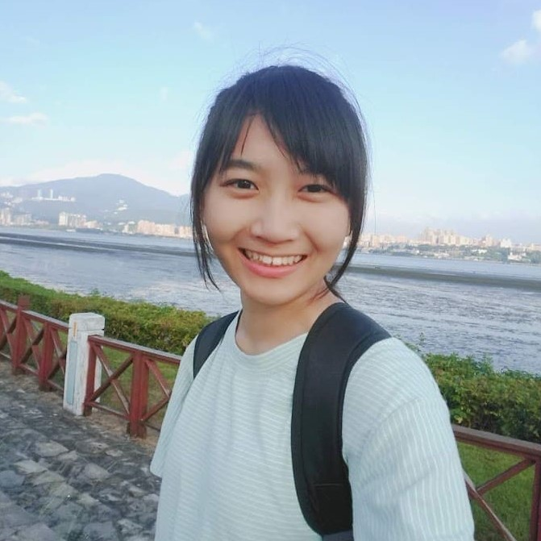
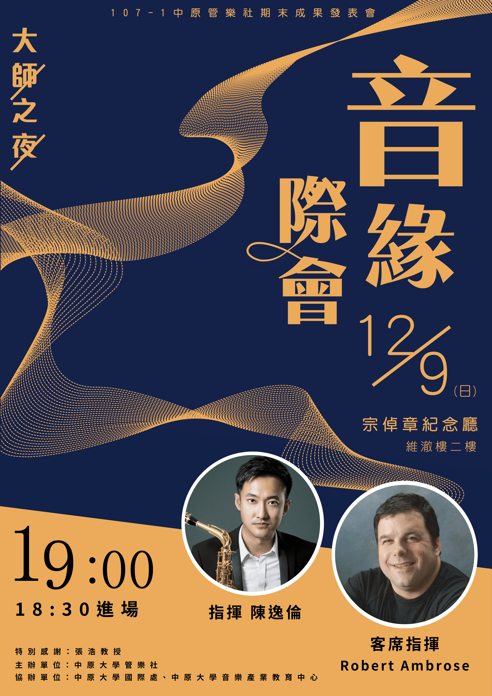
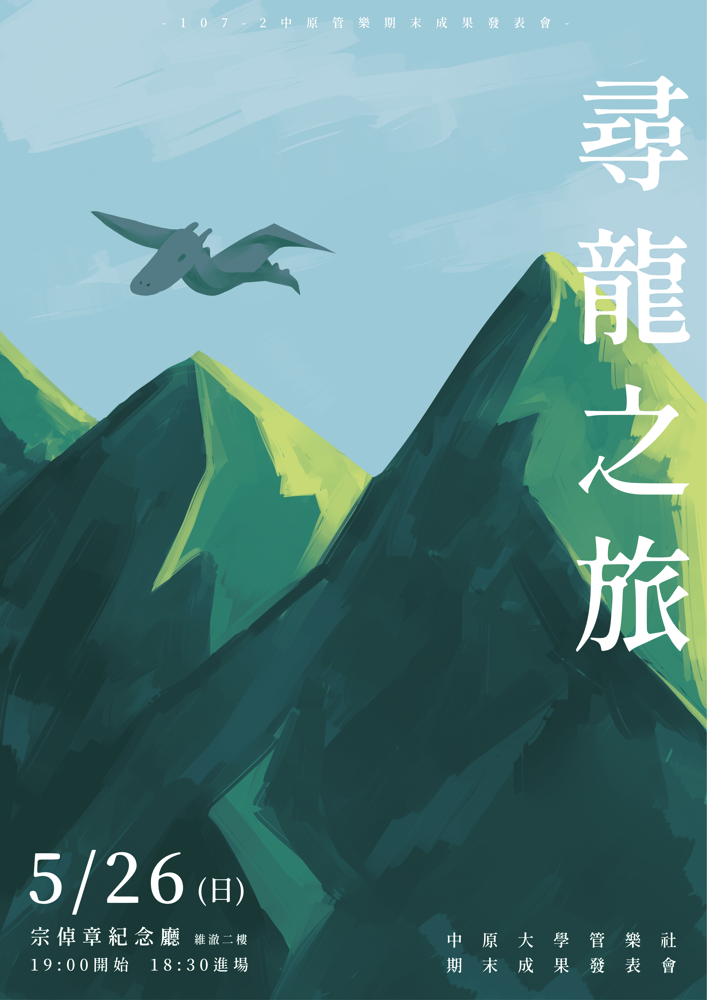
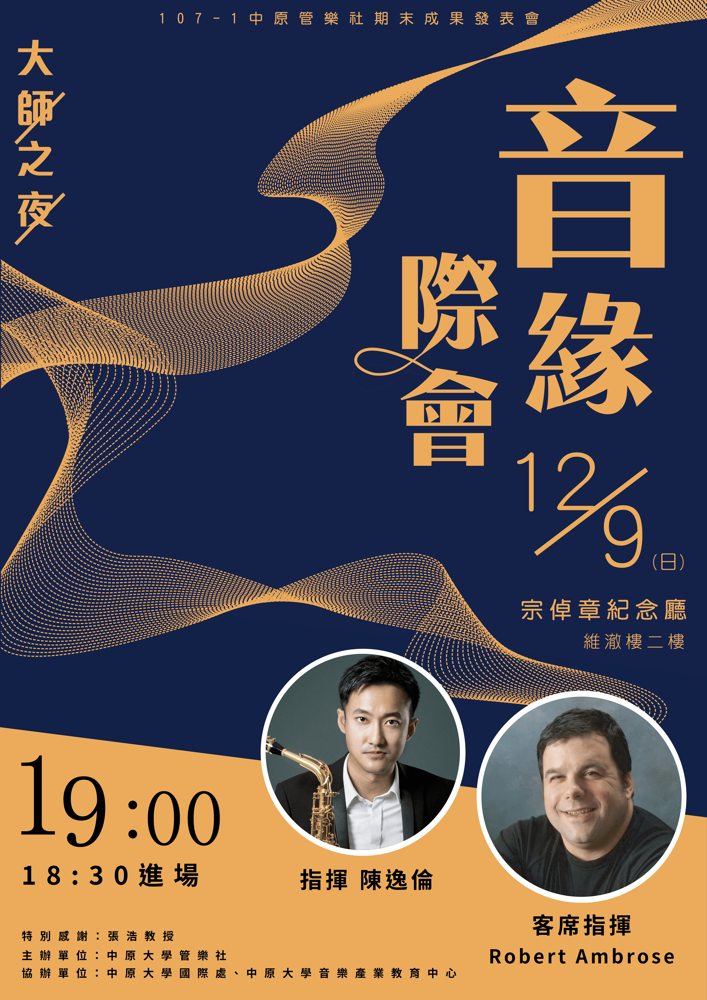
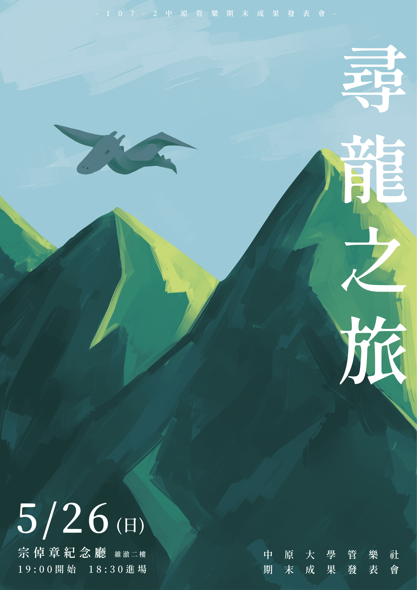

胡嘉軒
中原大學 資訊管理學系
「認真、盡責，將凡事做到最好。」
胡嘉軒
中原大學 資訊管理學系
「認真、盡責，將凡事做到最好。」
學歷
國小| 高雄市立新甲國民小學
國中| 高雄市立鳳甲國民中學
高中| 高雄市立小港高級中學
目前| 私立中原大學
國小| 高雄市立新甲國民小學
國中| 高雄市立鳳甲國民中學
高中| 高雄市立小港高級中學
目前| 私立中原大學
程式技能
Java
85%
HTML
80%
CSS
75%
JavaScript
50%
C#
60%
Python
40%
CONTACT ME


專業技能 Skills
Ps
Ai
Lr
SAI
經歷 Experience
課程 Class
專案 Project
社團活動 Club
| 中原管樂社—美宣
大二在管樂社擔任美宣一職，每逢有活動都要做很多的宣傳單及海報，以及各大大小小的文宣品。自己也很喜歡設計，所以這份職位做起來是滿喜歡的。
| 中原管樂社—期末成果發表會總協
擔任107-1的成發總協，剛開始完全不知道該如何下手，還好有學姊的幫忙才能順利的完成這次的成發。在準備的過程中非常的累，自己不但要設計海報、宣傳單、節目單等等，還要去租借場地、申請海報張貼、校園宣傳、中原附近店家的拉贊等等。
活動當天更是緊張，深怕一個疏忽導致活動的不順利，還好最後很完美的落幕，也很感謝一路上幫助我的幹部以及社長。作品集 Portfolio

這個活動主要是幫助布拉谷社會企業賣他們的農產品，我們選擇了米來販售，這活動最困難之處就是要如何讓大家知道我們在賣米以及如何推銷農產品。我們也做了宣傳單到維澈樓和系辦發，雖然最後沒有賣出太多米，但是我學到了很多推銷以及講話的技巧，算是一個很特別的體驗。
這一次我們與木匠的家合作，販售他們的工業風木棧板杯墊，為了更了解木匠的家，我們還去了他們店家，做更進一步的了解，知道了他們的理念。
我們也做了海報、宣傳單等等，甚至還架設了一個方便大家觀看的網站，從網站上可以更清楚看到我們的商品。而印象最深刻的是拍攝宣傳影片，當時我們去同學家中拍攝，一路從晚上拍到隔天早上，是一個很難忘的回憶。
我們也做了海報、宣傳單等等，甚至還架設了一個方便大家觀看的網站，從網站上可以更清楚看到我們的商品。而印象最深刻的是拍攝宣傳影片，當時我們去同學家中拍攝，一路從晚上拍到隔天早上，是一個很難忘的回憶。
這個專案主要是做一個購物網站，聯合甲班的同學一起製作。一開始我們討論出要做導遊的預約網站，而中間不斷的修改，甲班同學也很辛苦製作了很多的網頁介面，而後端的我們也很努力的整合網站，讓他可以做資料的送出。
快要期末時，那時候每天熬夜做到凌晨三、四點都不誇張，甚至有很多同學都沒睡，一路做到隔天早上上課前，現在回想起來，那時候真的是很痛苦，不過看到網頁做出來的時候有滿滿的成就感，也很感謝我的夥伴們一起熬夜，完成這份專案。
快要期末時，那時候每天熬夜做到凌晨三、四點都不誇張，甚至有很多同學都沒睡，一路做到隔天早上上課前，現在回想起來，那時候真的是很痛苦，不過看到網頁做出來的時候有滿滿的成就感，也很感謝我的夥伴們一起熬夜，完成這份專案。
此專案主要是做有關中原大學的東西，我們這組是做中原大學的藝文活動。剛開始在做的時候蒐集了很多的藝文資料，也拍了很多相片當素材，在蒐集資料的同時才發現原來學校這麼多藝文活動可以聆聽。
在製作網頁的時候，遇到很多困難，例如版面的配置、配色、東西很難調整到想要的地方、組員製作的風格不一等等，都是我們需要一一去解決的。雖然打網頁很辛苦，常常一個頁面的製作就要好幾個小時，甚至花上一、兩天的時間，不過最後看到做出來的網頁，充滿了成就感，這些辛苦也算值得了。
在製作網頁的時候，遇到很多困難，例如版面的配置、配色、東西很難調整到想要的地方、組員製作的風格不一等等，都是我們需要一一去解決的。雖然打網頁很辛苦，常常一個頁面的製作就要好幾個小時，甚至花上一、兩天的時間，不過最後看到做出來的網頁，充滿了成就感，這些辛苦也算值得了。
| 中原管樂社—美宣
大二在管樂社擔任美宣一職，每逢有活動都要做很多的宣傳單及海報，以及各大大小小的文宣品。自己也很喜歡設計，所以這份職位做起來是滿喜歡的。
| 中原管樂社—期末成果發表會總協
擔任107-1的成發總協，剛開始完全不知道該如何下手，還好有學姊的幫忙才能順利的完成這次的成發。在準備的過程中非常的累，自己不但要設計海報、宣傳單、節目單等等，還要去租借場地、申請海報張貼、校園宣傳、中原附近店家的拉贊等等。
活動當天更是緊張，深怕一個疏忽導致活動的不順利，還好最後很完美的落幕，也很感謝一路上幫助我的幹部以及社長。
